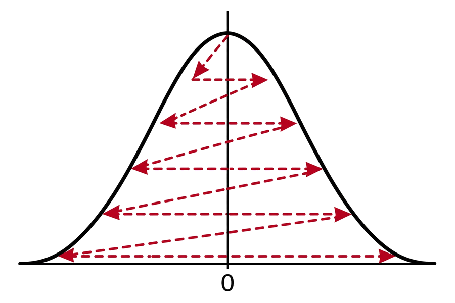
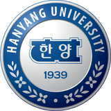

M.S. student in ECE, Purdue University
cho620 [at] purdue.edu
About
I am an M.S. student in Electrical and Computer Engineering at Purdue University, advised by Prof. Younghyun Kim in the
NEIS Lab. My research interests are energy-efficient ML accelerators, memory-centric
architectures for LLM inference, and hardware-software co-design.
I received my B.S. in Electrical Engineering, summa cum laude, from Hanyang University.
Publications

CO-MAC: A Center-Out Ordered Stochastic MAC for Low-Latency Inference
Hwangyu Cho*, Tong Chen*, Younghyun Kim
Design Automation Conference (DAC), 2026 · paper
CO-MAC processes weights in order of increasing magnitude, reducing CNN inference latency by up to 54.8% over the state-of-the-art
stochastic accelerator.
Education
Purdue University
M.S. in Electrical and Computer Engineering · Advisor: Prof. Younghyun Kim
Hanyang University
B.S. in Electrical Engineering · Advisor: Prof. Jungwook Choi
Experience
Purdue University
Graduate Research Assistant
Stochastic computing and memory-centric architectures for AI inference
SK hynix
DRAM System Analysis Intern
Memory-centric architecture modeling for LLM inference

Hanyang University
Undergraduate Research Assistant
Quantization and RAG for a domain-specific LLM
Korea Institute of Science and Technology (KIST)
Research Intern
FPGA-based digital lock-in amplifier for gas measurement
Honors & Awards
Young Fellowship, ACM/IEEE Design Automation Conference
Excellence Award, Capstone Design Fair, School of Engineering, Hanyang University
Honorable Mention, Graduate Projects and Theses Competition, Department of Electronic Engineering, Hanyang University